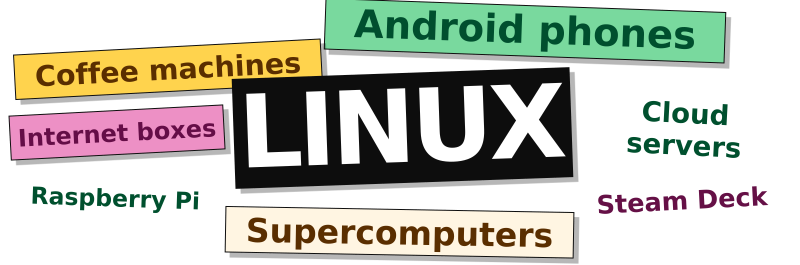

NUnix · L3 MIAGE · CM1 · 90 minutes
ISTIC · University of Rennes
2026–2027

You can use it all day without opening a terminal.
Android phones
The Linux kernel manages processes, memory and hardware.
Freebox Server Pop
A home internet box. Free publishes its Linux source code.
Linux can run behind a touchscreen or a web interface.
Mobile web use
69.17%
of observed mobile page views come from Android, built on Linux.
Websites
92.1%
use the Unix family, including Linux, among sites whose OS W3Techs identifies.
Supercomputers
500/500
systems in the June 2026 TOP500 list use the Linux family.
Three lectures of 90 minutes.
| Lecture | Topics | Application |
|---|---|---|
| CM1 · Unix | Files, paths and permissions | Find files and check access |
| CM2 · Commands | Processes, search, pipes and redirections | Count errors in a log |
| CM3 · Bash | Variables, conditions, loops and functions | Write scripts with arguments and loops |
The exercises practise commands first, then scripts.
Today: find the main error in one log.
Next week: check 200 logs every morning, including when you are away.
A saved script lets the team:
| Task | A useful starting point |
|---|---|
| Explore sales figures, filter and make a chart | Excel or another graphical analysis tool |
| Inspect a server’s logs, processes and permissions | Remote shell and system commands |
| Repeat a file-processing procedure every morning | A tested script and a scheduler |
| Query related business tables | SQL and a database |
| Explain the result to the team | A spreadsheet, dashboard or report |
Excel also offers Power Query and Office Scripts for repeatable work.
The operating system, the terminal and the command interpreter
| Resource | Operating system responsibilities |
|---|---|
| Processes | Start, schedule and stop programs |
| Memory | Allocate memory and isolate processes |
| Files | Store data and control access |
| Devices | Provide interfaces to hardware |
Programs request services through system calls.
Our working environment: a Linux system with the Bash shell and command-line tools.
| Name | Meaning |
|---|---|
| Unix | The operating-system family that inspired Linux |
| GNU | The project behind Bash and many command-line tools |
| Linux | The kernel: manages processes, memory and hardware |
GNU = GNU’s Not Unix.
The name contains itself: a recursive acronym.
| Name | Role |
|---|---|
| Terminal emulator | Displays text and receives keyboard input |
| Shell | Interprets command lines and runs commands |
| Command | Performs an operation, such as listing files |
A script saves a sequence of shell commands in a file.
/.Example home directory: /home/alice
The university may use a different path.
| Need | Typical location |
|---|---|
| Alice’s personal files | /home/alice |
| System configuration | /etc |
| Installed add-on applications | /opt |
| Changing application data | /var/lib |
| Log files | /var/log |
Configuration: /etc · Logs: /var/log
| Directory | Typical role |
|---|---|
/home, /root |
User homes; the root account’s home |
/usr |
Most distribution-provided tools and libraries |
/usr/local |
Software installed locally by the administrator |
/opt |
Add-on software packages |
/ is the filesystem root.
root is also the administrator account’s name.
| Directory | Purpose / lifetime |
|---|---|
/var |
Changing data, often persistent |
/tmp |
Temporary files; cleanup policy varies |
/run |
Runtime state, cleared at boot |
/dev |
Device interfaces |
/proc, /sys |
Views of processes, kernel and devices |
A path can expose live system information.
It need not refer to ordinary data stored on disk.
/
├── home/ user files
├── mnt/ a temporary mount point
└── media/ removable media mount pointsMounting makes another filesystem visible at a directory.
The device node might be /dev/sdb1; its files appear at the mount point.
| Notation | Meaning |
|---|---|
. |
Current working directory |
.. |
Parent directory |
/ |
Root directory |
~ |
Your home directory, expanded by the shell |
$HOME |
Variable containing your home path |
$PWD |
Variable containing the current directory path |
Current directory: /home/alice
| Path | Interpretation |
|---|---|
/home/alice/notes.txt |
Absolute: start at / |
notes.txt |
Relative: start in the current directory |
./notes.txt |
The same relative path |
../bob/notes.txt |
Go to the parent, then into bob |
A path tells us where to look. Permissions determine whether access is allowed.
Navigate, inspect and change the directory tree
| Command | Result |
|---|---|
cat notes.txt |
Print the whole file |
less notes.txt |
Browse interactively, q to quit |
more notes.txt |
Browse a page at a time |
head -n 5 notes.txt |
Print the first five lines |
tail -n 5 notes.txt |
Print the last five lines |
diff old.txt new.txt |
Show differences between two files |
cd .. do?ls option includes hidden entries?cat a.txt b.txt print first?echo '*.txt' expand the pattern?-aa.txt.*.Identify the account, inspect the path, explain the permission check
-rwxr-xr--
u g o| Class | Applies to |
|---|---|
u |
The file's owner |
g |
Members of the file's group |
o |
Other users |
a |
All three classes when using chmod |
| Bit | Regular file | Directory |
|---|---|---|
| r | Read contents | List entry names |
| w | Modify contents | Add or remove entries* |
| x | Execute | Search / traverse |
*Changing directory entries also requires search permission. Other restrictions, such as the sticky bit, may apply.
640 for a regular file.run.sh.rw-r-----chmod u+x run.shx# Illustrative server metadata
drwxr----- alice students shared/
-rw-r----- alice students shared/notes.txtBob belongs to students. He can list the names, but cannot open notes.txt. Why?
The directory’s group bits lack x: traversal.
If team access is intended, the owner can add g+x.
Examples to revisit during TD or personal practice
| Layer | What it gives us |
|---|---|
| Operating system | Processes, storage and access control |
| Graphical interface | Windows, menus and direct visual interaction |
| Shell | Commands we can combine and save in scripts |
| Application | A task-specific tool, such as Excel or a database |
Your laptop can run Windows while the company’s application runs on Linux. You need to work with both.
| Quantity | Meaning |
|---|---|
| 2,000,000 log lines | Example input size |
| 1,048,576 rows | The maximum in one Excel worksheet |
| One row per error code | The summary the team wants to discuss |
Process the raw log where it lives, save the counts, then use Excel to analyse or present the summary.
Microsoft: worksheet limits. Power Query and the Data Model offer other ways to handle larger datasets.